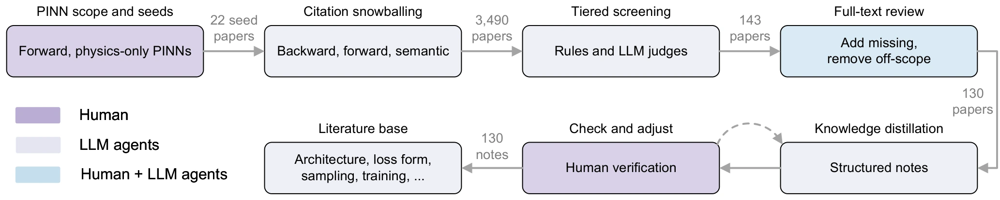
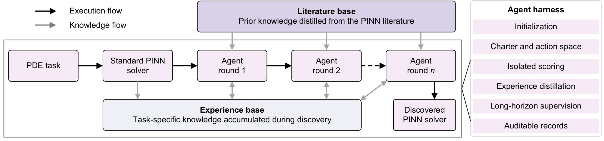
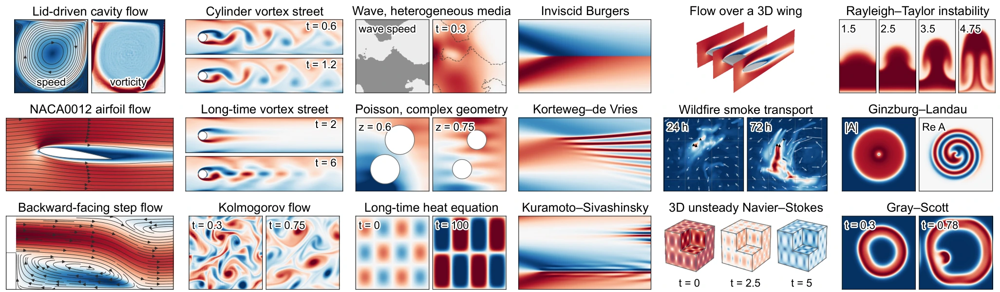

Knowledge-centric agent system for autonomous discovery of physics-informed neural network solvers
Here we present PINNSeek, a knowledge-centric agent system for the autonomous discovery of PINN solvers. We evaluate PINNSeek on 18 challenging PDE problems. Within a wall-clock training budget of 60 to 480 s per solver, the solvers that PINNSeek discovers are more accurate than four state-of-the-art methods designed by human experts (Chiu et al., 2026; Wang et al., 2026; Cho et al., 2023; Webb et al., 2026) on all 18 problems.
Key results
How PINNSeek works
PINNSeek features two knowledge bases, which determine what knowledge guides the discovery, and an agent harness, which determines how that knowledge is used.
Literature base
Built to be comprehensive, refined and accurate. It holds notes on the methods of 130 papers, screened from 3,490 candidates, each note verified by human researchers.
Experience base
Knowledge that grows with the discovery. It accumulates retrospective evidence, grounded in measured outcomes and the agent's diagnosis of what works, what fails and why, on which every later round builds.
Coding agent
Within the action space of each discovery round, the agent redesigns the whole solver, decides when to draw on each knowledge base and distills its findings into the experience base.
Agent harness
Gives the agent agency in using and accumulating this knowledge and keeps the discovery trustworthy. It supervises the rounds over many hours, scores every candidate in an isolated process and keeps auditable records.
The knowledge that guides the discovery evolves with the discovery itself.






Discovered PINN solvers against four SOTA methods
We compare the discovered PINN solvers with four SOTA methods designed by human experts. Scale-PINN (Chiu et al., 2026) trains by sequential correction, APTS (Wang et al., 2026) adds pseudo-time stepping against spurious solutions, SPINN (Cho et al., 2023) uses separable networks and DSGNAR (Webb et al., 2026) reformulates the optimization for well-conditioned training. The best discovered PINN solver of each problem is retrained with five seeds, and the four methods are trained with five seeds for the same time on the same hardware.